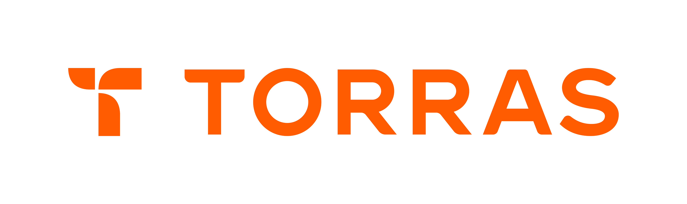
Be Here NowAI SCENE CREATION WORKFLOW
这不是一份“万能提示词合集”，而是一套从产品卖点、目标人群、参考图到提示词迭代的工作方法。
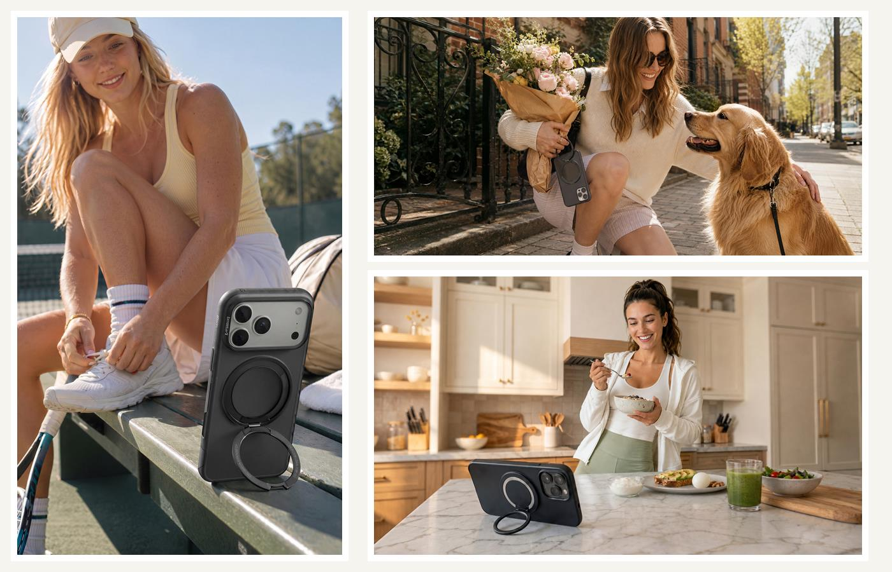
01 / 核心经验
提示词写得长，不一定能生成好图。
真正有效的是：先想清楚这张图为什么成立，再让 AI 执行。
这套方法的目标不是“生成一张像真的图”，而是生成一张有商业用途的图：真实、好看、产品清楚、人物状态对。
02 / 好图成立的六个条件
03 / 工作流
目标人群、核心功能、情绪气质，先写成一句画面 brief。
场景、人物、动作、产品、色调各有分工。
人物为什么在这个场景里这样使用产品。
展示哪一面、处在前中后景、明暗边界和不可遮挡的结构。
先按六模块写清楚，再每轮只改一个变量。
效率来自前期判断。画面方案越清楚，后面越少靠“碰运气”。
04 / 参考图分工
每张图只负责一类信息。这样既能减少相互干扰，也能让产品、人物、动作和氛围更快被 AI 找准。
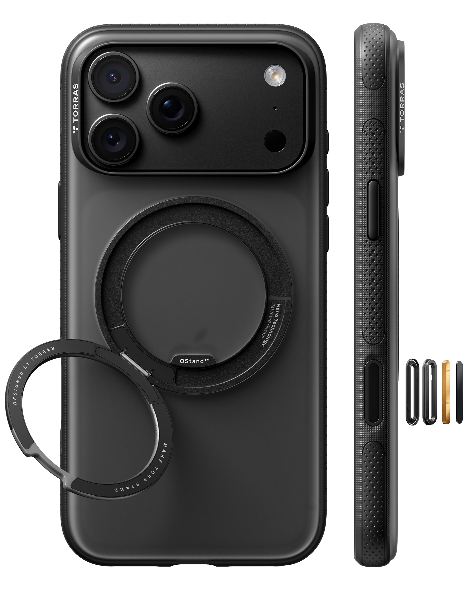
产品参考控制材质、颜色、结构、支架环、镜头保护框等产品细节。
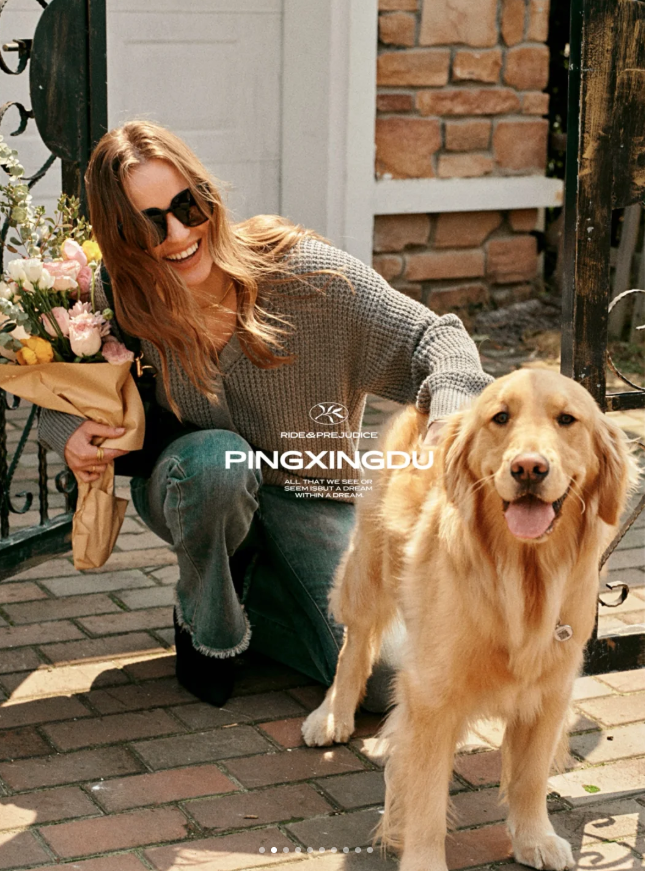
色调参考控制光影、胶片感、生活氛围和情绪价值。
控制年龄、气质、服装、身体状态和目标人群画像。
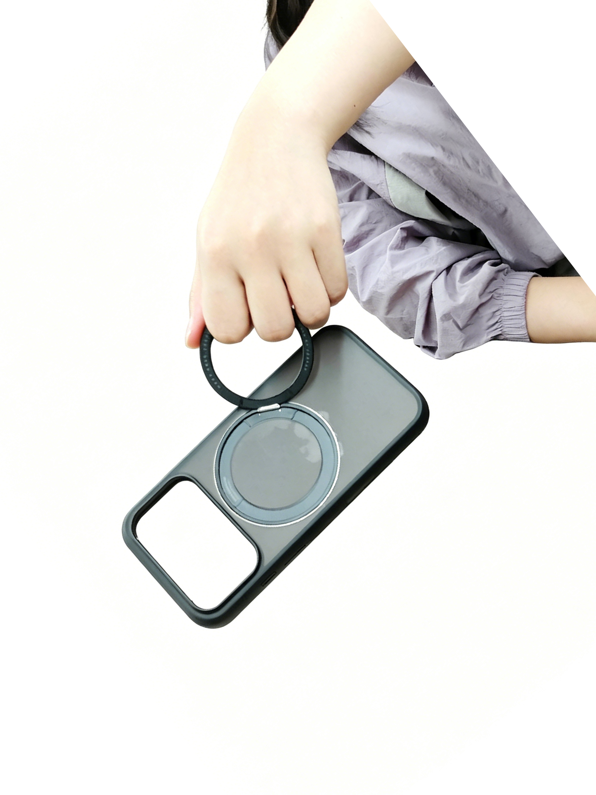
动作参考控制手势、姿势、产品使用关系，避免动作不自然。
参考图本身要有质感：AI 往往会继承它的光影、构图和气质。同一项目中复用色调和人物参考，也会让系列图更统一。
05 / 提示词结构
把不同信息放进清晰的模块里，AI 才能理解“什么必须准确、什么用于定调、什么需要避免”。
06 / 真实提示词拆解
以“网球馆女生”案例为例。左侧保留实际发送的提示词，彩色标记与第 05 页的六个模块一一对应。
3:4、网球俱乐部、低视角产品特写，以及明亮清爽的运动杂志感。
图层 44 定场景，46 定产品，45 定人物，50 定动作；每张图只负责一类信息。
她刚打完球，坐在长椅休息、整理鞋带或擦汗，因此手机竖立在身边有使用理由。
单独锁定手机壳背面、圆形背板、360° 支架、铰链、镜头框与支撑方式。
人物看向手机，动作松弛；低机位、浅景深，让产品成为最清晰的焦点。
提前限制产品变形、支架错位、屏幕朝镜头、多部手机、人物畸形和杂乱道具。
同一条提示词不是“堆描述”，而是把每一句放进它该承担的模块里。
提示词模板 / 从方案到迭代
首轮不是追求成片，而是验证“故事、产品位置、人物动作”是否已经成立；选出最接近的一张，再针对一个问题继续修正。
一次生成 4-6 张，只看场景故事、人物状态和产品位置是否合理。
选最接近的一张作为下一轮参考，不要把已经正确的场景和构图全部推倒。
动作不自然就改人物与镜头；产品不清楚就改产品与功能；不要同时重写全部内容。
最后再处理皮肤、材质、支架结构、清晰度、色调和瑕疵。
可复制提示词骨架
不用每轮都重写整段提示词。先定位问题属于哪个模块，再只修改这一个模块。
07 / 不只是提示词，也是视觉导演
让产品处在更清楚的明暗边界里，避免黑色手机壳融进黑色背景。
人物服装、场景元素和背景色不要抢产品，最好形成对比或留白。
产品最清楚，人物和环境适度虚化，但动作和故事仍然可读。
温馨、运动、健康、松弛，都要和目标人群的生活状态一致。
所以同样的方法，有人生成得普通，往往不是流程错了，而是画面判断还不够具体。
CASE 01 / 人和狗狗互动场景
画面不是“一个人拿着手机和狗”，而是一个温馨的生活抓拍：人物买花回家，牵着狗散步，开心互动，手机通过支架环自然悬挂在手上。
CASE 01 / 我如何和 AI 修改提示词
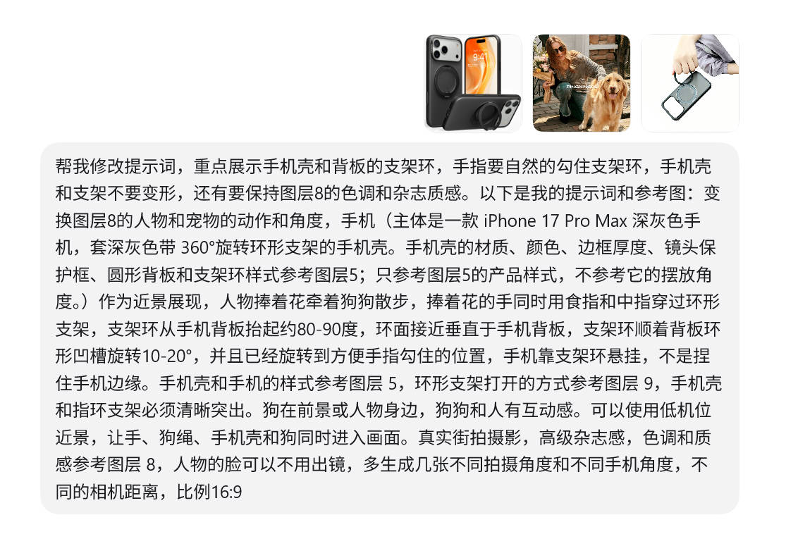
初版：先建立温馨抓拍场景先告诉 AI 色调、光线、胶片颗粒、生活氛围，并说明人物捧花、牵狗散步。
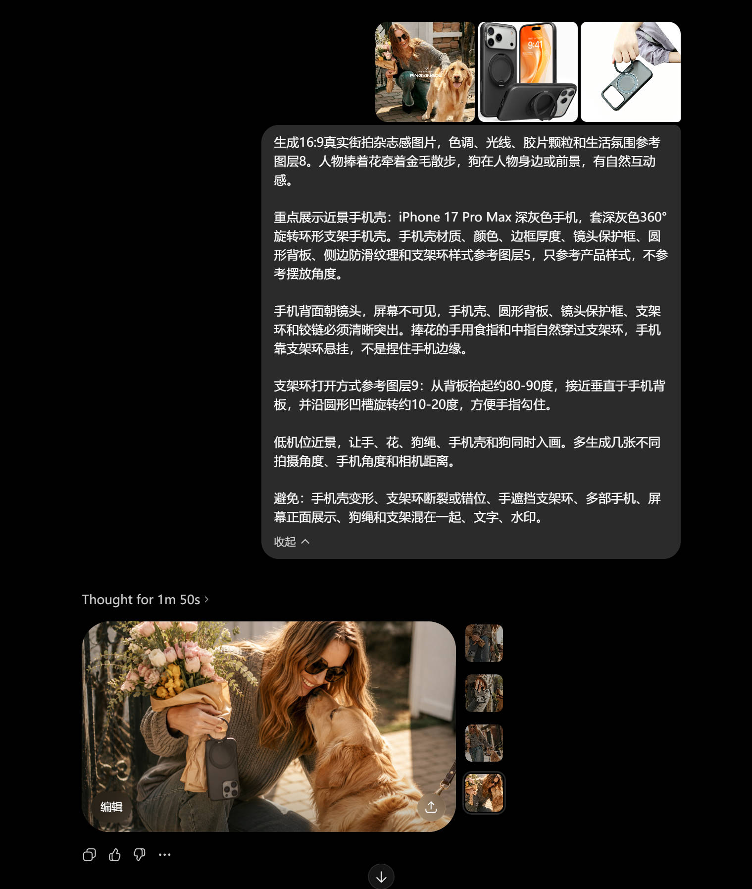
优化：补充支架环动作细节明确食指和中指穿过支架环，手机靠支架环悬挂，不是捏住手机边缘。
CASE 01 / 方法拆解
买花、遛狗、回家路上互动，本身就是合理生活片段。
手指穿过支架环，手机靠环悬挂，AI 不容易误解成握住手机。
温馨街拍、人物和狗的互动、杂志胶片感都由参考图定方向。
避免支架环断裂、手机变形、多部手机、屏幕正面、文字水印。
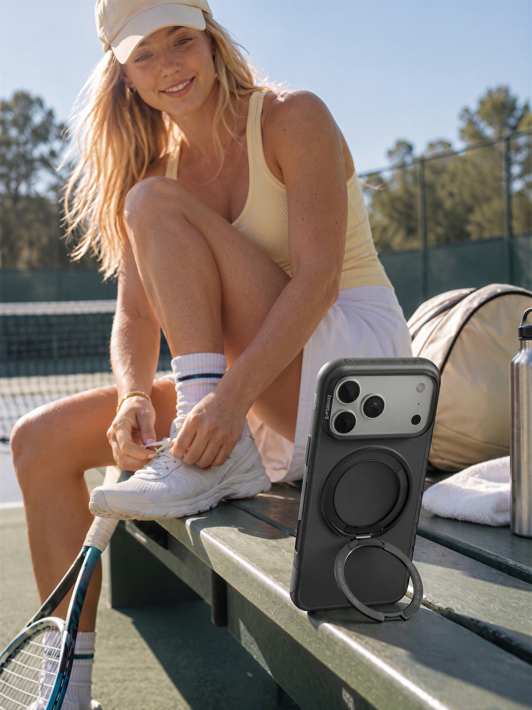
CASE 02 / 网球馆女人场景
故事设定是：她刚打完网球，坐在长椅上休息，一边看手机，一边整理鞋带或保养球拍。这样“手机立在长椅上”就有真实使用理由。
CASE 02 / 我如何和 AI 修改提示词
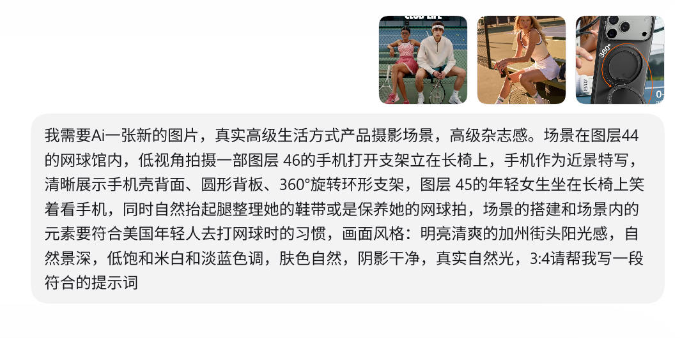
初版：明确场景、人物和产品位置低视角拍摄，手机在长椅前景，女生坐在长椅上看手机。
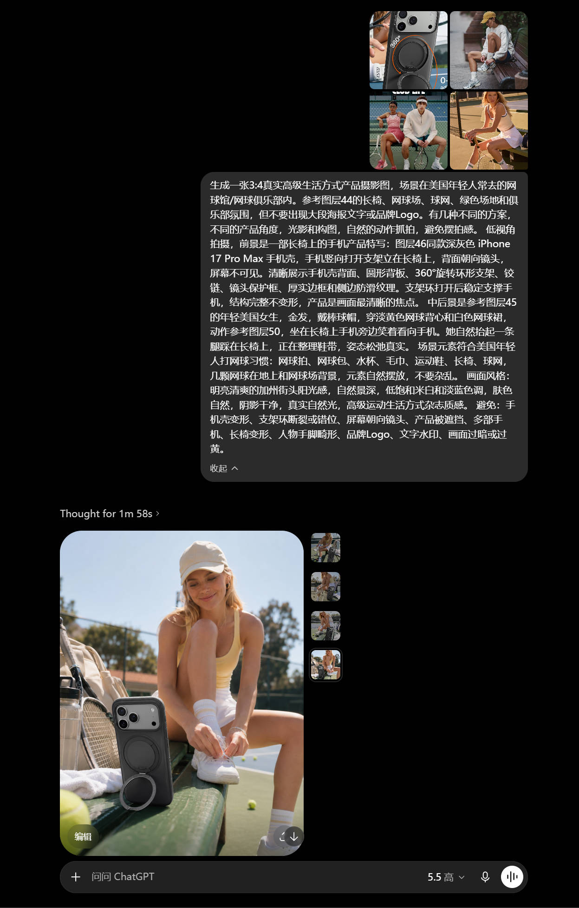
优化：补充真实运动习惯加入整理鞋带、保养网球拍、休息椅、网球等真实场景元素，但限制不要杂乱。
CASE 02 / 方法拆解
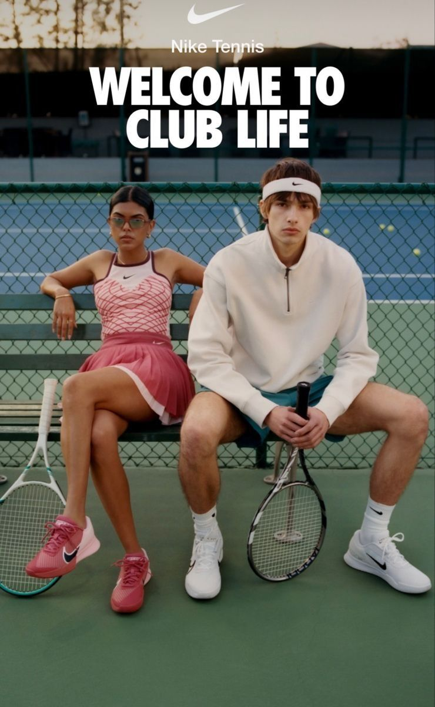
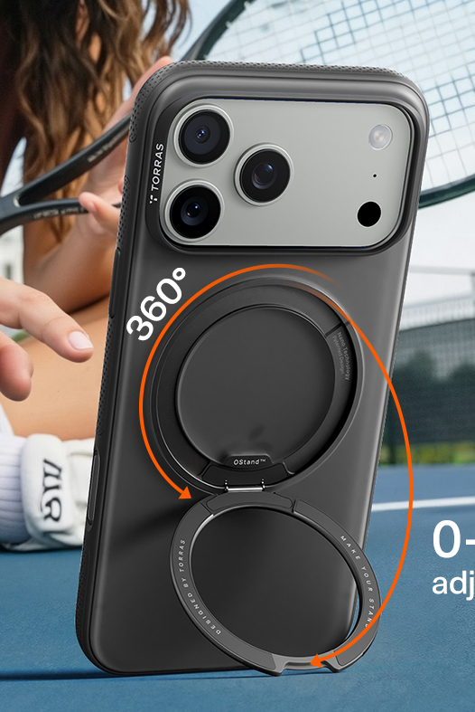
1 先确定真实运动场景：打完球、长椅休息、整理装备。
2 再确定产品位置：手机作为前景，支架打开，背面结构清楚。
3 最后控制画面气质：低饱和米白和淡蓝、自然光、干净阴影。
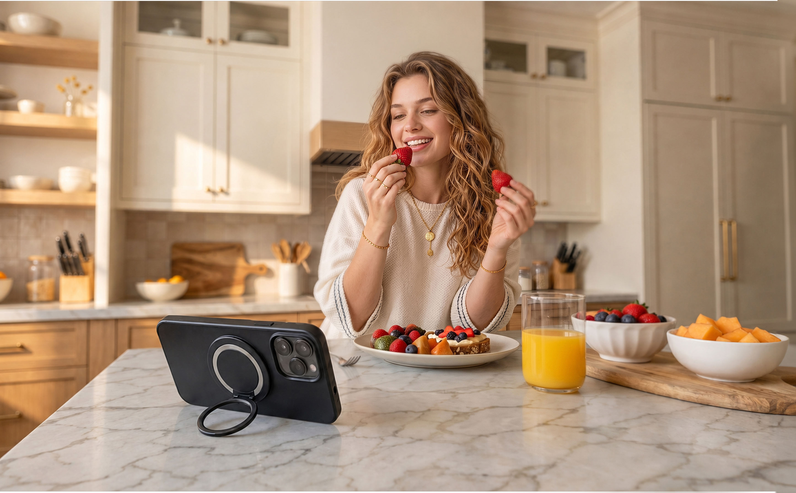
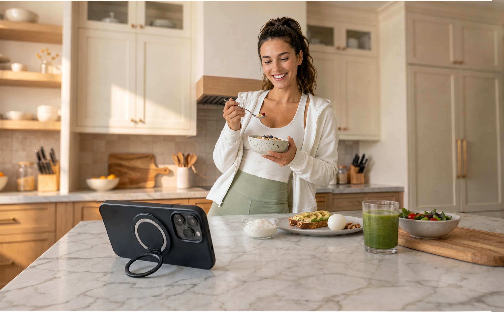
CASE 03 / 厨房健康人士优化
原图的问题不是“厨房不好看”，而是人物像在摆拍吃水果。优化方向是把她定义成刚运动完或准备运动的健康生活人士，正在喝果蔬汁并看向桌上的手机。
CASE 03 / 我如何和 AI 修改提示词
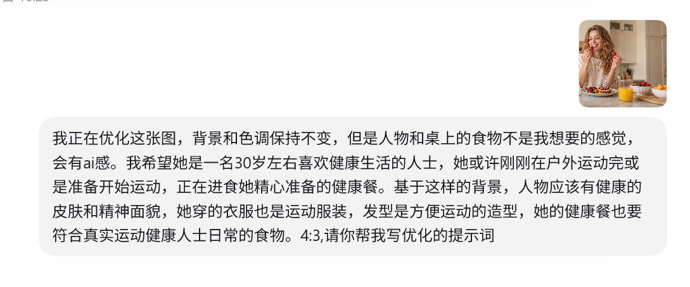
问题描述指出人物和食物有 AI 感，人物不像真实健康生活人群。
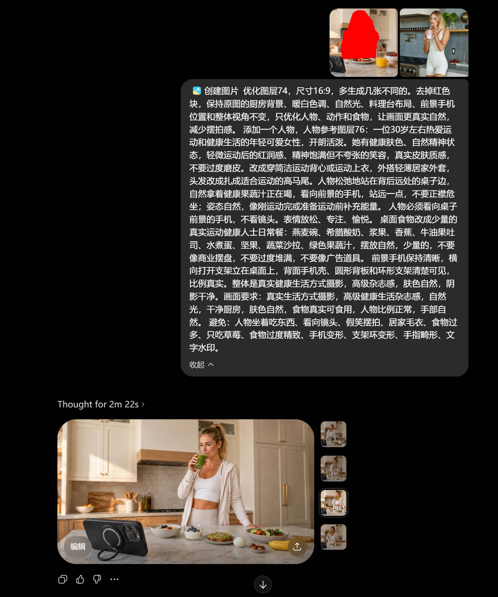
优化方向要求人物必须看向手机，穿运动服，发型方便运动，桌面食物符合真实运动人士日常。
CASE 03 / 方法拆解
她是谁？刚做完什么？为什么现在要看手机？
运动健康人群的健康餐，不是泛泛的“水果摆盘”。
靠在料理台边喝果蔬汁看手机，比正坐着摆拍更自然。
手机角度、支架、前景位置不能因为改人物而丢失。
07 / 互动分析
请先观察：产品是否清楚？人物和场景是否抢主体？光影是否服务产品？色块是否让画面更统一？
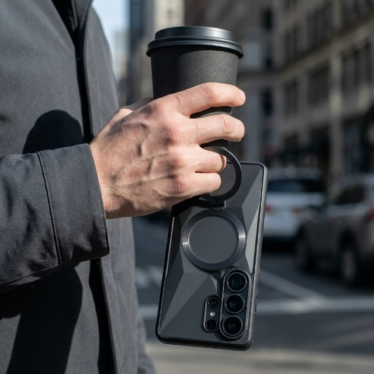
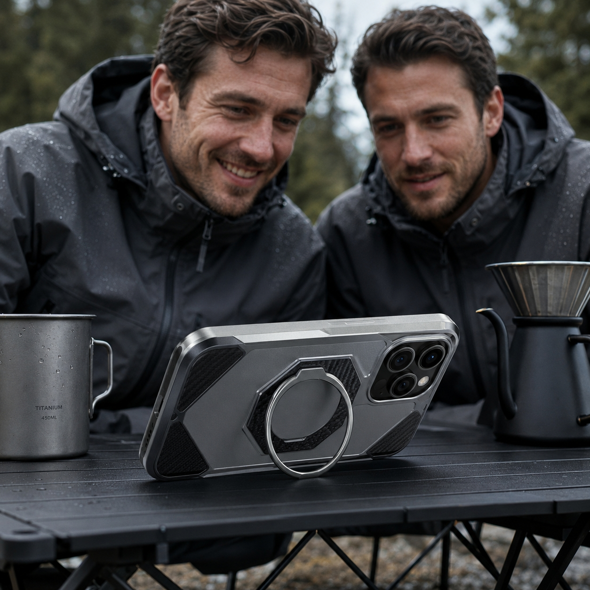
互动问题：如果只选一个最影响质感的问题，你会选产品不清楚、人物不真实、场景杂乱，还是光影没有重点？
07 / 简短分析
黑色产品贴着暗色桌面或深色服装，边界不清，支架和材质细节不突出。
人物只是“看起来在使用产品”，但手势、视线和身体状态缺少真实生活逻辑。
人物、道具、背景都在抢注意力，观众不知道先看产品还是先看场景。
光只是让画面好看，却没有帮助产品形成轮廓，甚至让功能结构变暗或变形。
服装、场景、道具的色块没有围绕产品建立对比和和谐感。
我的经验：写提示词时不仅要写“发生了什么”，还要提前想“光从哪里来、产品放在哪个明暗边界里、背景是否给产品留出空间”。
08 / 可复用检查表
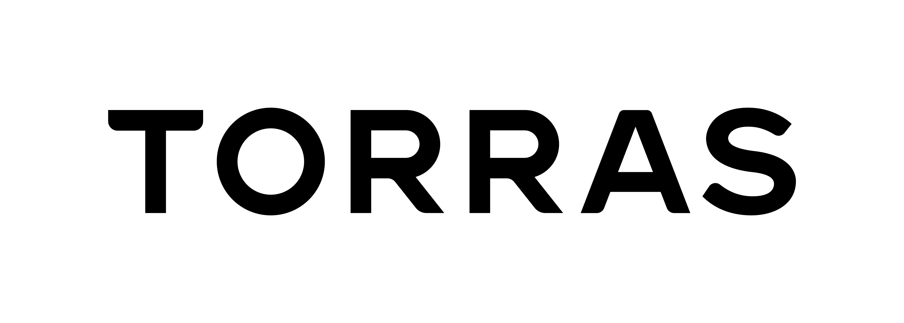
用真实生活逻辑搭场景，用参考图定质感，用提示词锁卖点，用视觉判断做最后把关。
Be Here Now